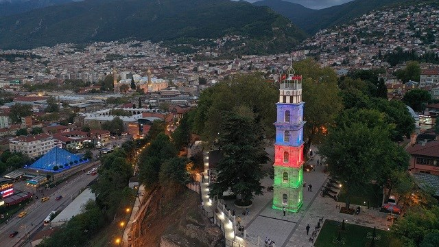

Tophane Saat Kulesi Bursa'da Osmanlı padişahı II. Abdülhamit'in tahta çıkışının 29. yılı şerefine inşa edildiği rivayet edilen tarihî saat kulesi. Osmanlı dönemi mimarisini yansıtan önemli bir anıtsal eserdir. Tophane Parkı içinde, İmparatorluğun kurucusu Osman Gazi ile ikinci padişahı Orhan Gazi'nin türbelerinin arkasında, eski adı Meydanı-ı Osmaniye olan Tophane Meydanı'ndadır. Bulunduğu yerden panoramik Bursa manzarasının görünmesi dolayısıyla, bir yangın kulesi olarak da kullanılmıştır.
Tarihi
Aynı yerde ilk olarak Sultan Abdülaziz döneminde bir saat kulesi yaptırılmış ancak 1900'lü yıllara kadar, bilinmeyen bir tarihte yıkılmıştır. Mevcut kulenin yapımına 2 Ağustos 1904'te yapımına başlanmış, 31 Ağustos 1905'te tamamlanarak II. Abdülhamit'in tahta çıkışı şerefine, Vali Reşit Mümtaz Paşa tarafından törenle hizmete sokulmuştur.
Azerbaycan Bayrağının yansıtılmasıyla oluşan muhteşem görünüm
